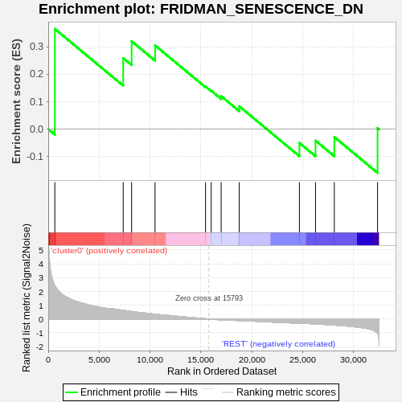
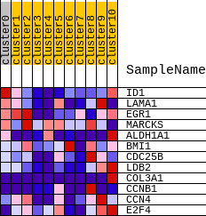
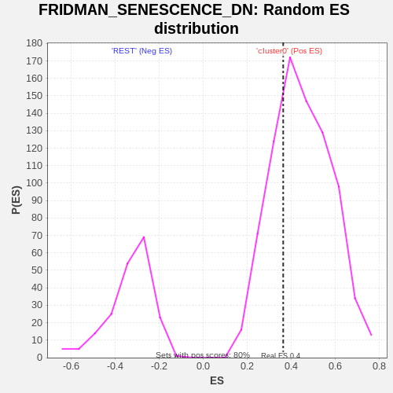

| | | Dataset | GTE_table.phenotypes_gte.cls#cluster0_versus_REST |
| Phenotype | phenotypes_gte.cls#cluster0_versus_REST |
| Upregulated in class | cluster0 |
| GeneSet | FRIDMAN_SENESCENCE_DN |
| Enrichment Score (ES) | 0.36510205 |
| Normalized Enrichment Score (NES) | 0.8124609 |
| Nominal p-value | 0.7226368 |
| FDR q-value | 1.0 |
| FWER p-Value | 1.0 |
Table: GSEA Results Summary

Fig 1: Enrichment plot: FRIDMAN_SENESCENCE_DN
Profile of the Running ES Score & Positions of GeneSet Members on the Rank Ordered List
| SYMBOL | TITLE | RANK IN GENE LIST | RANK METRIC SCORE | RUNNING ES | CORE ENRICHMENT | | 1 | ID1 | na | 649 | 2.400 | 0.3651 | Yes |
| 2 | LAMA1 | na | 7365 | 0.627 | 0.2590 | No |
| 3 | EGR1 | na | 8192 | 0.540 | 0.3203 | No |
| 4 | MARCKS | na | 10495 | 0.347 | 0.3052 | No |
| 5 | ALDH1A1 | na | 15456 | 0.019 | 0.1556 | No |
| 6 | BMI1 | na | 16012 | -0.010 | 0.1401 | No |
| 7 | CDC25B | na | 16989 | -0.064 | 0.1204 | No |
| 8 | LDB2 | na | 18768 | -0.112 | 0.0836 | No |
| 9 | COL3A1 | na | 24676 | -0.303 | -0.0496 | No |
| 10 | CCNB1 | na | 26258 | -0.354 | -0.0415 | No |
| 11 | CCN4 | na | 28107 | -0.437 | -0.0282 | No |
| 12 | E2F4 | na | 32355 | -1.018 | 0.0045 | No |
Table: GSEA details [plain text format]

Fig 2: FRIDMAN_SENESCENCE_DN
Blue-Pink O' Gram in the Space of the Analyzed GeneSet

Fig 3: FRIDMAN_SENESCENCE_DN: Random ES distribution
Gene set null distribution of ES for FRIDMAN_SENESCENCE_DN